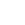

NOIZE MC, MUSE
SYSTEM OF A DOWN TWENTY ONE PILOTS
И МНОГИЕ ДРУГИЕ
COVID-FREE

MOSCOW AURORA
SUMMERTIME FEST
june — jule
2022
И МНОГИЕ ДРУГИЕ
COVID-FREE


входной билет
1200
₽
Фан-зона
2000
₽
vip-зона
3000
₽
входной абонемент
5000
₽
фан абонемент
1200
₽
vip абонемент
2000
₽
AURORA – это современная площадка для
выступления артистов разных жанров и поколений.
Каждый день для нас – это уникальность событий, в которой каждая крупица времени создаёт новую историю.
Ты найдёшь здесь всё, для своего качественного отдыха.
Большой и вместительный танцпол на 1600 человек, если ты любишь быть в движении и отдаваться концерту по максимуму.
Хочешь быть выше всех? У нас есть для тебя решение – ВИП-ложа на 400 человек с отличным обзором на всю сцену. Чтобы каждый момент концерта остался у тебя в памяти.
Не забываем про удобства! Наш клуб находится рядом с метро Площадь Ленина, а также большие панорамные окна с видом на Неву и на легендарный крейсер Аврора навсегда останутся в твоей памяти. Добавляем нашу главную изюминку – яркое аудиовизуальное оснащение, и мы получаем рецепт идеального концерта.
Уже представил? На сколько ударов быстрее забилось твоё сердце? А ведь мы ждём только тебя!